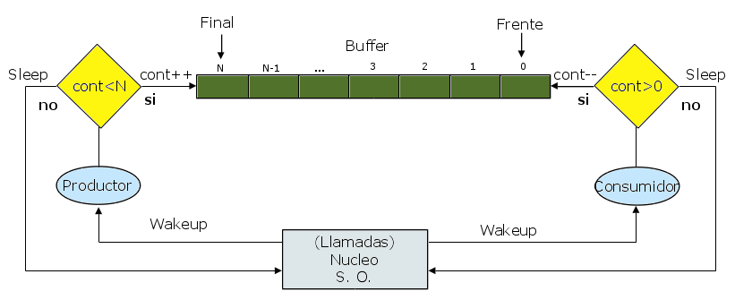

Universidad Nacional Experimental Del Táchira
Decanato De Docencia
Dpto. Ingeniería Informática
Sistemas Operativos
Código 0435607T
Contenido
- Condiciones de competencia
-
Exclusión mutua:
- Con Espera ocupada.
- Sin Espera ocupada.
- Problemas de clásicos de sincronización
Condiciones de competencia
Es el fenómeno producido cuando varios procesos
compiten por el acceso a uno o varios recursos
produciendo el bloqueo en la ejecución de esos procesos, ocasionando
el cuelge del sistema operativo.
Para evitar las condiciones de competencia se debe garantizar el acceso
seguro a recursos compartidos, es decir,
se deben coordinar y sincronizar los procesos.
Sección Crítica
Es el segmento del código del programa donde se accede a un recurso
compartido (como una estructura en memoria o un dispositivo de E/S) que
no debe ser accedido por otro hilo de ejecución para evitar conflictos
o alteración del resultado esperado.

Condiciones para evitar la competencia
-
Dos o más procesos no pueden estar dentro de sus
secciones críticas al mismo tiempo.
-
Nunca se debe suponerse sobre la velocidad
u orden de ejecución de los procesos.
-
Ningún proceso ejecutandose
fuera de su sección crítica puede bloquear otro procesos.
-
Ningún proceso deberá tener que esperar
indefinidamente para entrar a su región crítica.
Exclusión Mutua
Es el método mas común para evitar el uso simultáneo
de los recursos del sistema como variables globales y dispositivos de E/S, por
dos (2) o mas procesos del sistema.
Exclusión Mutua
Con espera ocupada
-
Desactivación de interrupciones (hardware).
-
Variables de Cerradura
-
Alternancia estricta
-
Solución de Peterson
-
La instrucción TSL
Sin espera ocupada (bloqueo)
-
Dormir y despertar
-
Semáforos
-
Contadores de Eventos
-
Monitores
-
Transferencia de mensajes
Exclusión Mutua con Espera ocupada
Desactivación de Interrupciones (hardware)
Es el método mas simple, consiste en desactivar todas las interrupciones
de hardware antes de entrar a la sección crítica. Sin embargo,
en la práctica no es recomendable porque si el proceso falla en
su sector crítico, el sistema operativo no puede recuperarse y se
cuelga el sistema.
desactivar_interrupciones()
SECCIÓN CRITICA
activar_interrupciones()
-
No es correcto que procesos del usuario desactiven interrupciones.
-
No funciona en sistemas de multiprocesamiento, ni distribuidos.
-
Pueden ocurrir errores catastróficos.
Exclusión Mutua con Espera ocupada
Variables de Cerradura
En éste caso se utiliza una variable binaria, donde 0 representa
cuando no hay ningún proceso en su sección crítica
y 1 cuando está ocupada. Entonces cada proceso antes de ingresar
a la sección crítica verifica el estado de la
variable de cerradura
y en caso de tener 0 como valor, cambia el valor a 1 e ingresa a la misma,
en caso de que la misma sea 1 el proceso se queda en espera verificando
hasta que el estado cambie a 1.
En sistemas con múltiples procesadores o distribuidos, se presente
un problema:
si dos procesos verifican al mismo tiempo
el valor de la cerradura y está en 0, ambos ingresan a la región
crítica.
Variables de Cerradura
Ejemplo
Exclusión Mutua con Espera ocupada
Alternancia estricta
Conocido también como la primera versión del
algoritmo de Dekker, obliga a cada proceso tener un turno
y existe un cambio de turno cada vez que un proceso
sale de la sección critica.
-
Bloquea el acceso al otro proceso cuando se está
en una sección crítica.
-
Si un proceso es mas lento que el otro, bloquea al otro
por mucho tiempo.
-
Viola la regla 3:
ningún proceso debe bloquear a otro fuera de su
sección crítica.
-
Si uno de ellos se bloquea dentro o fuera de la
sección crítica, puede bloquear al resto.
Proceso A
Proceso B
Exclusión Mutua con Espera ocupada
Solución de Peterson
Es un algoritmo realizado por Peterson en 1981, para compartir recursos
sin complicaciones a través del uso de memoria compartida para la
sincronización.
Antes de leer la variable compartida, cada proceso
llama a una función para entrar a su sección
crítica pasando su respectivo número
como parámetro.
Luego se provoca una espera (en caso necesario) hasta que
el proceso pueda entrar. Al finalizar, se llama a otra función
para liberar su sección crítica e indicar que ha finalizado
para permitir la entrada a otros procesos.
Solución de Peterson
Exclusión Mutua con Espera ocupada
Instrucción TSL (Test-and-set lock)
Depende del hardware para utilizarse, las computadoras con más
de un procesador suelen tener una instrucción llamada
TSL.
Esta instrucción lee el valor de un registro en memoria
y guarda un valor (distinto a 0). Al ser una instrucción
por hardware, el procesador garantiza que la instrucción TSL
se realiza sin interrupciones de otros proceso.
Además, en un sistema multiprocesador, ninguno de los otros procesadores
puede acceder a la variable antes de terminar de ejecutarse la instrucción.
(al ejecutarse se cierra el bus de la memoria)
Exclusión Mutua sin Espera ocupada
Dormir y despertar
-
Ahora se presentan soluciones donde no se desperdicia el tiempo del CPU.
-
sleep:
es una llamada al sistema que provoca a quien lo llamo se bloquee hasta
que otro proceso lo despierte.
-
wakeup:
es una llamada al sistema para despertar un proceso bloqueado.
Problema del Productor - Consumdor
- Es un problema donde se puede aplicar este algoritmo.
- Dos procesos comparter un buffer de tamaño fijo.
- Un proceso es el productor y añade información al buffer.
- tro es el consumidor y lee (o modifica) la información del buffer.
El problema del Productor - Consumidor
-
El problema del productor es cuando vaya a poner un elemento en el buffer
y este esté lleno. (Se va a dormir y se despierta cuando se consuma
algún elemento)
-
El problema del consumidor es cuando va consumir un elemento del buffer
pero está vacío. (Se va a dormir y despierta cuando exista
un elemento)
-
Cada proceso debe chequear al otro para despertarlo
antes de irse a dormir.

El problema del Productor - Consumidor
Productor
Proceso B
Exclusión Mutua sin Espera ocupada
Semáforos
- Propuesto por Dijkstra en 1965.
-
Es una varible entera denominada
S donde (exceptuando su inicialización)
se acceden mediante llamadas wait()
y signal().
-
Simboliza el numero de wakeups
pendientes, 0 indica que no hay alguno por despertar.
-
wait() - DOWN
verifica si el valor del semaforo es mayor a cero.
Si es así, lo decrementa y continúa sus
operaciones; en caso contrario se va a dormir y espera
para continuar.
-
signal() - UP
incrementa el valor del semáforo. Si existe uno o
mas procesos dormidos y no pueden completar una operación
wait(), el semáforo elige uno al azar
y le permite completar wait().
Exclusión Mutua sin Espera ocupada
Semáforos
-
Se debe garantizar que dos procesos no ejecuten
wait() y signal()
sobre el mismo semáforo al mismo tiempo.
-
Las aplicaciones pueden pasar mucho tiempo en secciones críticas
y por tanto, no es una buena solución (Se desaprovecha la CPU)
Productor - Consumidor con Semaforos
- FULL (LLeno):cuenta las ranuras ocupadas.
- EMPTY (Vacío):cuenta las ranuras libres.
-
MUTEX:Controla que tanto el consumidor,
como productor entre al mismo tiempo al buffer.
Productor - Consumidor con Semaforos
Monitores
Es una herramienta básica (brindada por el compilador) utilizada
para lograr la exclusión mutua: sólo un proceso puede estar
activo en un monitor en un momento dado.
Se encuentra en un nivel superior de los semáforos, ya que al usar
estos últimos, si no estan programados correctamente pueden provocar
bloqueos mutuos.
Bloqueos mutuos (deadlocks)
Ocurre cuando 2 o mas procesos esperan indefinidamente un evento que sólo
puede ocurrir por uno de los otros procesos que estan esperando.
Bloqueos mutuos (deadlocks)
Imaginemos 2 semáforos con un valor inicial de 1:
S y Q.
-
En el primer wait()
el valor de los semáforos disminuye a 0.
-
Ambos procesos se quedan dormidos al mismo tiempo.
-
Ambos quedan esperando a que el otro despierte, modifique el semáforo
para continuar.
Inanición (Bloqueo indefinido)
Un proceso siempre queda en espera y ocurren eventos que le impiden salir
de la cola de espera de un semáforo.
Contadores de eventos
Simplemente es una variable entera que lleva el conteo de los eventos
sucedidos, se utiliza para evitar la exclusión mutua.
Operaciones
- Read(contador)
- Advance(contador)
- Wait(contador, valor) - Espera a que el contador llegue al valor deseado
Productor - Consumidor con contadores
En este caso se utilizan 2 contadores:
IN para los items producidos y OUT
para los items consumidos.
s
Transferencia de mensajes
Utiliza las primitivas Send y Receive
, las cuales son llamadas al sistema. La primera llamada envía
un mensaje a un destino dado y la segunda recibe el mensaje del destino
especificado.
Problemas
- Son mas complejos de implementar.
- Todos los mensajes son del mismo tamaño.
-
Para evitar la pérdida de mensajes se deben implementar acuses
de recibos, pero incrementan la complejidad.
-
Se debe verificar la autenticidad del emisor, de lo contrario se crean
agujeros de seguridad.
Problemas de clásicos de sincronización
Lectores - escritores
-
Consiste en una base de datos que debe compartirse con una serie de procesos,
algunos desean leerla (lectores) y otros desean
tanto leer como escribir (escritores).
-
Si dos procesos desean leer al mismo tiempo no hay problema, sin embargo,
si un escritor y otro proceso (sea lector o escritor) desean utilizar la
base de datos al mismo tiempo se garantizará un caos.
Problemas de clásicos de sincronización
Lectores - escritores
La solución al problema utiliza:
- Semáforo mutex inicializado a 1.
- Semáforo writer inicializado a 1.
- Entero readcount inicializado a 0.
Escritor
Lectores - Escritores
Lector
Problemas de clásicos de sincronización
Problema de los Filósofos
Cinco filósofos se sientan alrededor de una mesa y pasan su vida cenando y pensando.
Cada filósofo tiene un plato de fideos y un tenedor a la izquierda de su plato.
Para comer los fideos son necesarios dos tenedores y cada filósofo sólo puede tomar los que están a su izquierda y derecha.
Si cualquier filósofo coge un tenedor y el otro está ocupado,
se quedará esperando, con el tenedor en la mano, hasta que pueda coger el otro tenedor, para luego empezar a comer.
Permitir máximo 4 filosofos en la mesa.
←
→
/
#